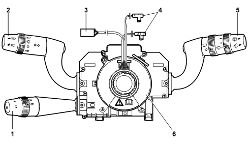
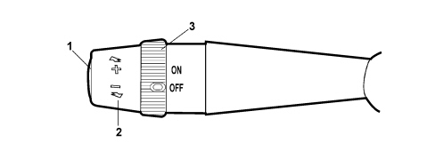

5580A CRUISE CONTROL SYSTEM
- Path
- Descriptions > 55 ELECTRICAL EQUIPMENT > 5580 SPECIAL ACCESSORIES > 5580A CRUISE CONTROL SYSTEM
- Kind
- system description
- Applies to
- all engines; all production periods
- Interactive page
- https://sloeber94.github.io/elrnDB-fCrm/en/#/194000006
Applies to: all engines; all production periods
OPERATION
Systems for the control of petrol and diesel engines offer Cruise Control as a function, i.e. a system that automatically maintains a cruising speed set by the driver.
The Cruise Control system control is integrated in the steering column switch unit which controls the direction indicators and the front/rear windscreen wiper.
The location of the Cruise Control system control is illustrated in the diagram.

1 - Cruise Control stalk
2 - Lighting/turn signal stalk
3 - Horn / radio controls connector (Steering Wheel Node)
4 - Air Bag connectors
5 - Front/rear wiper control stalk
6 - Clock spring
The third lever for the steering column switch unit incorporates the Cruise Control system controls, namely:
- the ring nut switch for activating/deactivating the system;
- the lever with the vehicle speed increase/decrease memorizing function;
- the Resume button that calls up a saved speed.

1 - Resume button recalls a stored speed;
2 - Lever with the vehicle speed increase/decrease memorizing function;
3 - Ring nut switch (ON: Cruise attivated; OFF: Cruise deactivated).
Pin Out (six way connector)
Pin | Function |
|---|---|
1 | Resume control positive signal |
2 | Ignition-operated power supply |
3 | N.C. |
4 | Cruise control on positive signal |
5 | Deceleration (-) control positive signal |
6 | Acceleration (+) control positive signal |
The electronic system is managed by the engine management control unit. It automatically maintains the cruising speed set by the user through the direct management of the engine.
Memorizing the speed selected
To activate the operation of the Cruise Control:
- operate the ring nut switch to the ON position;
- let the vehicle reach the desired speed; it should be remembered that the Cruise Control can only be activated for speeds above 40 km/h. It is advisable to engage it in fourth gear or higher where the road conditions allow the speed set to be maintained safely.
- push the steering column switch unit lever upwards to increase the speed, the lever returns automatically (unstable).
- release the accelerator pedal and let the system work directly;
- the warning light in the instrument panel should come on constantly with the signal coming from the engine management control unit, via the CAN, indicating the Cruise Control operating status. The warning light going out indicates that the system is deactivated.
Variation in the speed memorized
If you wish to alter the vehicle speed memorized it is necessary to:
(A) Speed increase:
- push the lever upwards: this produces an acceleration ramp at a constant, programmable gradient;
- when the lever is released (automatic return), the system keeps the new speed reached by the vehicle memorized.
(B) Speed decrease:
- push the lever downwards: having achieved the reduction in the vehicle speed in relation to the speed set previously using the Cruise Control, release the lever and the system will maintain the new vehicle speed.
The Cruise Control system can operate throughout the permitted engine rpm range and can manage cars with manual or automatic/sequential gearboxes.
System adjustment does not cut in under the following circumstances:
- with a manual gearbox, in neutral, reverse, 1st speed;
- with an automatic/sequential transmission, with the lever in position P, N, R and 1st speed.
Resume button function
This function makes it possible, by pressing the button, to return the vehicle to the last speed value memorized if the Cruise Control has been switched off in certain circumstances (for example, by operating the clutch or braking).
Deactivation of the cruise control
(A) The Cruise Control is deactivated by the user by:
- operating the ring nut switch to the OFF position;
- switching the engine off;
- operating the clutch pedal or brake pedal (in such cases, the last speed achieved is stored and can be recalled by pressing the Resume button);
- placing the automatic/sequential gear lever in position N, P, R (in such cases, the last speed achieved is stored and can be recalled by pressing the Resume button);
- vehicle speed below the minimum permitted (about 40 km/h) or above the maximum permitted;
Activating the accelerator with the Cruise Control activated: by pressing the accelerator (for example to overtake) the Cruise Control system allows a momentary increase in the speed of the vehicle being momentarily deactivated, but as soon as the accelerator pedal is no longer pressed, the system reactivates the speed setting memorized.
(B) The Cruise Control is automatically deactivated if:
- accidental or incorrect operation of the buttons on the lever takes place;
- the acceleration is above the calibrated limit (e.g. steep descent);
- the deceleration is above a calibrated limit (e.g. the gear selector lever is operated without using the clutch);
- there is a fault in the system;
- the ABS or ESP intervene.
The system turns off automatically when the signals used by the Cruise Control software are incorrect because they are due to component defects:
- vehicle speed sensor;
- accelerator pedal potentiometer;
- brake switch plausibility;
- clutch switch plausibility;
- Cruise control switch plausibility and Resume key;
- Cruise switch plausibility and speed increase or decrease lever positions.
The Cruise Control system is also deactivated if errors occur in components that impair engine operation, namely:
- engine management control unit;
- engine rpm sensor;
- electronic throttle body sensors/actuators (for petrol engines);
- engine load meter (for petrol engines),
- ignition coils (for petrol engines),
- injectors;
- high pressure system components (for diesel engines).
In the case of both faults and problems an error code that can be read using the diagnostic equipment is memorized, but these Cruise Control errors do not cause the engine failure warning light or the Cruise Control warning light to come on.